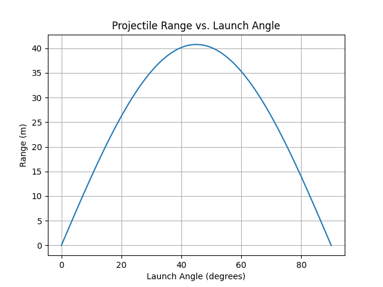
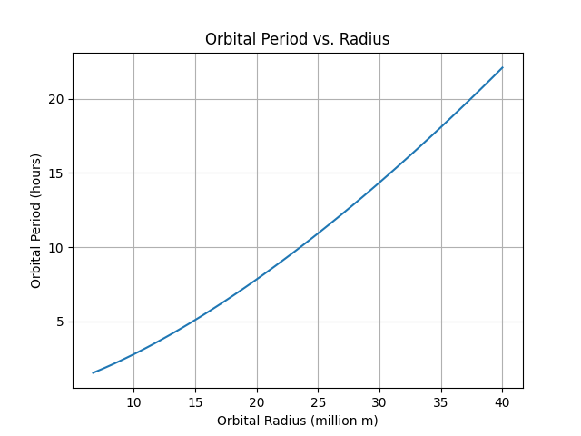

Investigating the Range as a Function of the Angle of Projection
Motivation
Projectile motion is a fundamental concept in physics, illustrating how objects move under gravity. This study explores how the range of a projectile depends on its launch angle, uncovering both theoretical and computational insights.
Theoretical Foundation
The motion of a projectile follows these kinematic equations:
-
Horizontal motion:
\(x = v_0 \cos(\theta) t\)
-
Vertical motion:
\(y = v_0 \sin(\theta) t - \frac{1}{2} g t^2\)
-
Time of flight:
\(T = \frac{2 v_0 \sin(\theta)}{g}\)
-
Range equation:
\(R = \frac{v_0^2 \sin(2\theta)}{g}\)
Python Simulation
import numpy as np
import matplotlib.pyplot as plt
g = 9.81 # gravitational acceleration (m/s^2)
v0 = 20 # initial velocity (m/s)
theta = np.linspace(0, np.pi/2, 100)
R = (v0**2 * np.sin(2*theta)) / g
plt.plot(np.degrees(theta), R)
plt.xlabel("Launch Angle (degrees)")
plt.ylabel("Range (m)")
plt.title("Projectile Range vs. Launch Angle")
plt.grid()
plt.show()

Investigating the Dynamics of a Forced Damped Pendulum
Motivation
The forced damped pendulum exhibits complex behaviors such as resonance and chaos. Understanding its motion helps in various applications, from engineering to climate models.
Theoretical Foundation
The equation of motion for a forced damped pendulum is:
\(\frac{d^2\theta}{dt^2} + b\frac{d\theta}{dt} + \omega_0^2 \sin\theta = A \cos(\omega t)\)
Python Simulation
from scipy.integrate import solve_ivp
def pendulum(t, y, b, w0, A, w):
theta, omega = y
return [omega, -b*omega - w0**2*np.sin(theta) + A*np.cos(w*t)]
b, w0, A, w = 0.1, 1.0, 0.5, 2.0
t = np.linspace(0, 50, 1000)
sol = solve_ivp(pendulum, [0, 50], [np.pi/4, 0], args=(b, w0, A, w), t_eval=t)
plt.plot(t, sol.y[0])
plt.xlabel("Time (s)")
plt.ylabel("Angle (rad)")
plt.title("Forced Damped Pendulum Motion")
plt.grid()
plt.show()

Orbital Period and Orbital Radius
Motivation
Kepler's Third Law states that the square of the orbital period is proportional to the cube of the orbital radius. This principle is key in astrophysics and satellite design.
Theoretical Foundation
For circular orbits:
\(T^2 = \frac{4\pi^2 r^3}{GM}\)
Python Simulation
G = 6.674e-11 # Gravitational constant (m^3/kg/s^2)
M = 5.972e24 # Earth mass (kg)
r = np.linspace(6.7e6, 4e7, 100) # Orbital radius range (m)
T = 2 * np.pi * np.sqrt(r**3 / (G * M))
plt.plot(r / 1e6, T / 3600)
plt.xlabel("Orbital Radius (million m)")
plt.ylabel("Orbital Period (hours)")
plt.title("Orbital Period vs. Radius")
plt.grid()
plt.show()

Conclusion
These simulations provide insights into projectile motion, pendulums, and orbits, demonstrating their dependence on key parameters. Further refinements could include air resistance and non-linear effects to enhance realism.